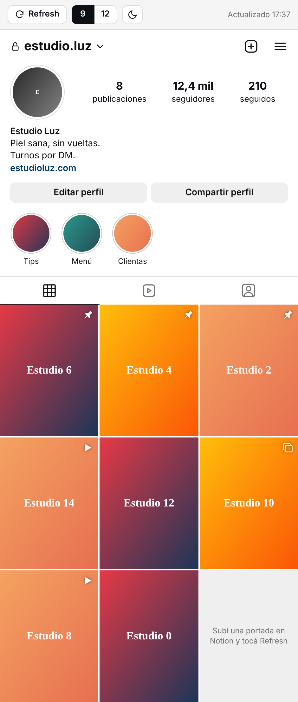
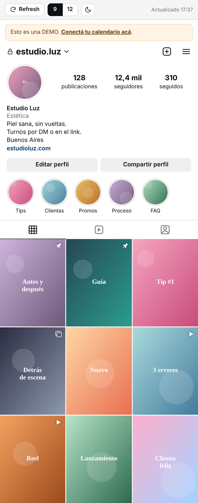
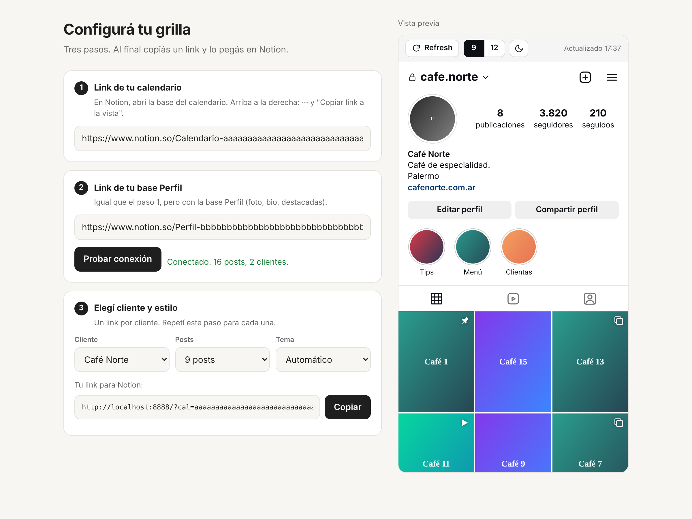
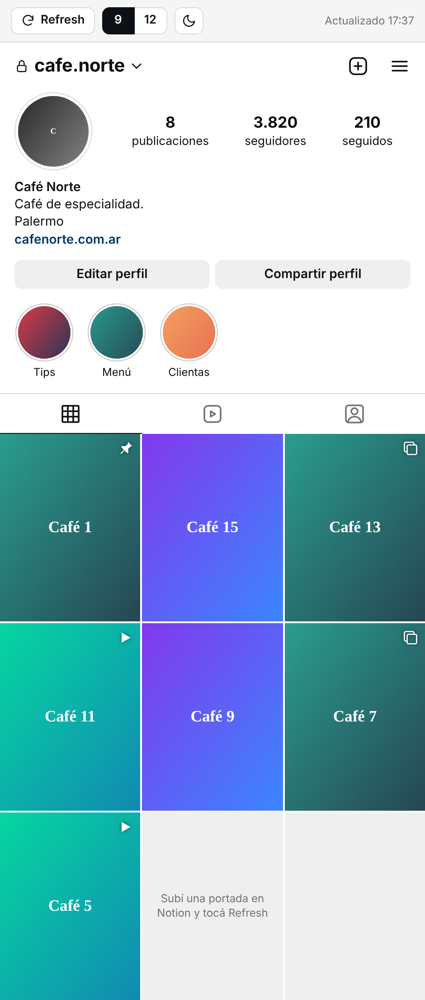
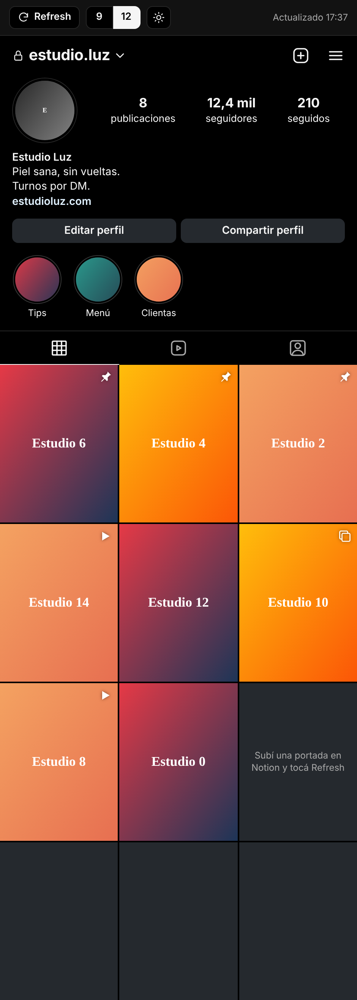
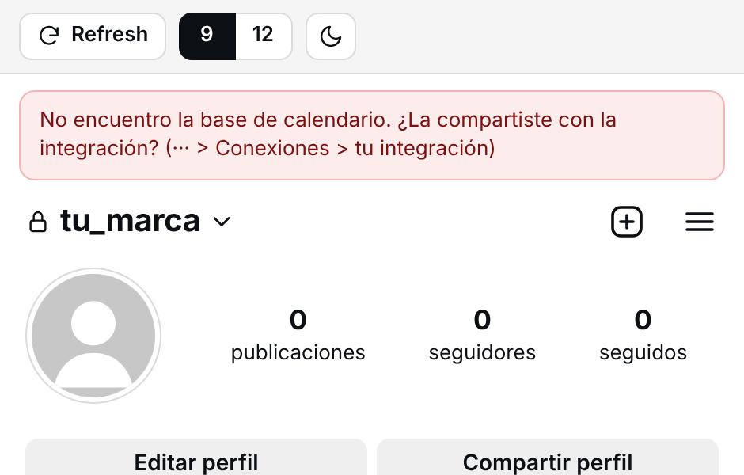

Tu grilla de Instagram dentro de Notion
Guía de instalación. Se hace UNA vez, unos 15 minutos. Todo gratis, sin código.

Qué vas a necesitar
- Cuenta de Notion (la gratis sirve).
- Cuenta de GitHub (gratis). Es donde se guarda tu copia del widget.
- Cuenta de Netlify (gratis). Es la que publica tu link.
1Duplicá la plantilla de Notion
1 minuto
- Abrí el link de la plantilla que vino con tu compra.
- Arriba a la derecha tocá Duplicar y elegí tu espacio de trabajo.
- Vas a tener dos bases: Calendario y Perfil.
¿Ya tenés tu calendario? Podés usarlo. Solo tiene que tener las columnas de la tabla del final. Los nombres pueden variar un poco: el widget también reconoce "Imagen", "Cover", "Cuenta", "Formato".
2Creá la integración de Notion
2 minutos
Notion no deja que nadie lea tus páginas sin permiso. La integración ES ese permiso. Es gratis.
- En Notion, abajo a la izquierda: Configuración y después Conexiones.
- Tocá Agregar conexión y elegí Conexión para desarrolladores (la de las llaves { }). NO la de MCP.
- Se abre la página de desarrolladores. Tocá Nueva integración.
- Nombre: Grilla IG. Espacio de trabajo: el tuyo. Tipo: Interna. Guardar.
- Copiá el Secreto de integración interna (empieza con
ntn_). Guardalo en una nota, lo usás en el paso 4.
Ese secreto es como una contraseña. No lo compartas ni lo pegues en Notion.
3Dale acceso a tus bases
1 minuto
- Abrí la página donde están tus bases Calendario y Perfil.
- Arriba a la derecha: ··· y después Conexiones.
- Buscá Grilla IG y confirmá.
Si las bases están en páginas distintas, repetí esto en cada una. Es el error más común: si el widget dice "No encuentro la base", es esto.
4Publicá tu widget en Netlify
3 minutos
- Tocá el botón Deploy to Netlify que vino con tu compra.
- Entrá con tu cuenta de GitHub (o creala ahí mismo).
- Netlify te pide NOTION_TOKEN: pegá el secreto del paso 2.
- Tocá Save & Deploy y esperá un minuto.
- Te da un link tipo
nombre-raro-123.netlify.app. Ese es TU widget.
Opcional: un nombre más lindo
En Netlify: Site configuration, Change site name. Ej: grilla-estudioluz.netlify.app.

5Conectá tu calendario
2 minutos
- Abrí tu link agregando
/setup.htmlal final. Ej:grilla-estudioluz.netlify.app/setup.html - En Notion, abrí la base Calendario: ··· arriba a la derecha y Copiar link a la vista. Pegalo en el paso 1.
- Lo mismo con la base Perfil, en el paso 2.
- Tocá Probar conexión. Tiene que decir "Conectado".
- Elegí cliente, cantidad de posts y tema. La vista previa se actualiza sola.
- Tocá Copiar.

6Pegalo en Notion
1 minuto
- En la página de tu calendario escribí
/embedy Enter. - Pegá el link y tocá Insertar enlace.
- Arrastrá el bloque al costado del calendario para tenerlos en dos columnas.
- Estirá el bloque desde el borde de abajo hasta que se vea la grilla entera.
7Una grilla para cada cliente
- En el Calendario, cada post lleva su Cliente.
- En Perfil, una fila por cliente con el MISMO nombre.
- Volvé a
/setup.html, elegí otro cliente, copiá y pegá ese link en la página de ese cliente.

8El día a día
| Querés | Hacés |
|---|---|
| Ver un post nuevo | Subí la imagen en Portada y tocá Refresh. |
| Cambiar el orden | Cambiá la Fecha. El más nuevo va arriba. |
| Fijar un post | Tildá Fijado. Hasta 3. Destildalo para sacarlo. |
| Ver 12 en vez de 9 | Tocá 12 arriba del widget. |
| Modo oscuro | Tocá la luna. |
| Cambiar bio, foto o destacadas | Editá la fila en Perfil y tocá Refresh. |
| Abrir un post | Tocalo en la grilla: abre su página de Notion. |

9Si algo no anda
| Dice | Solución |
|---|---|
| "No encuentro la base…" | Te falta el paso 3: conectá la integración a esa base. |
| "El token no es válido" | En Netlify: Site configuration, Environment variables, NOTION_TOKEN. Pegá el secreto de nuevo y en Deploys tocá "Trigger deploy". |
| "No es una base de datos" | Copiaste el link de la página, no de la base. Abrí la base y usá "Copiar link a la vista". |
| "Imagen vencida" | Notion renueva las imágenes cada hora. Tocá Refresh. |
| Un post no aparece | Le falta la Portada o el Cliente está escrito distinto. |
| El perfil sale vacío | El nombre del cliente en Perfil tiene que ser igual al del Calendario. |

10Columnas que lee el widget
Calendario
| Columna | Tipo | Para qué |
|---|---|---|
| Nombre | Título | Nombre del post |
| Fecha | Fecha | Orden de la grilla |
| Portada | Archivos | La imagen de la grilla |
| Cliente | Selección | Separa grillas |
| Fijado | Casilla | Fija arriba (máx. 3) |
| Tipo | Selección | Post, Carrusel o Reel |
Perfil
| Columna | Tipo | Para qué |
|---|---|---|
| Cliente | Título | Igual que en el Calendario |
| Usuario | Texto | El @ (sin la arroba) |
| Nombre | Texto | Nombre visible |
| Categoría | Texto | Ej: Estética (opcional) |
| Bio | Texto | Con saltos de línea |
| Link | URL | Tu web o link de bio |
| Foto | Archivos | Foto de perfil |
| Publicaciones, Seguidores, Seguidos | Número | Si dejás Publicaciones vacío, cuenta los posts |
| Destacadas | Archivos | Una imagen por destacada. El nombre del archivo es el título: Tips.png |